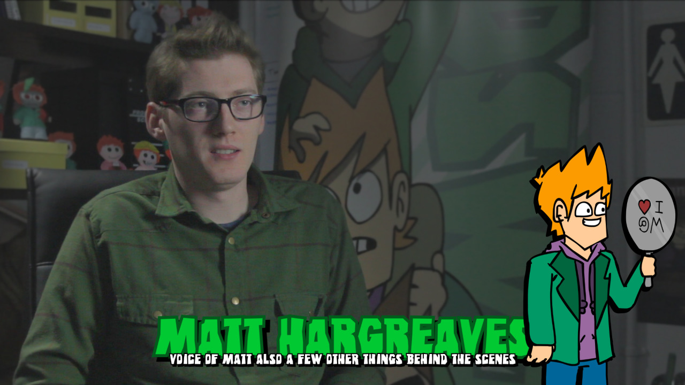
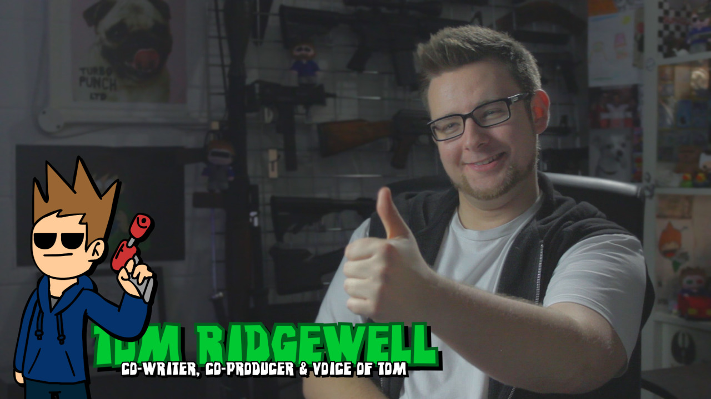
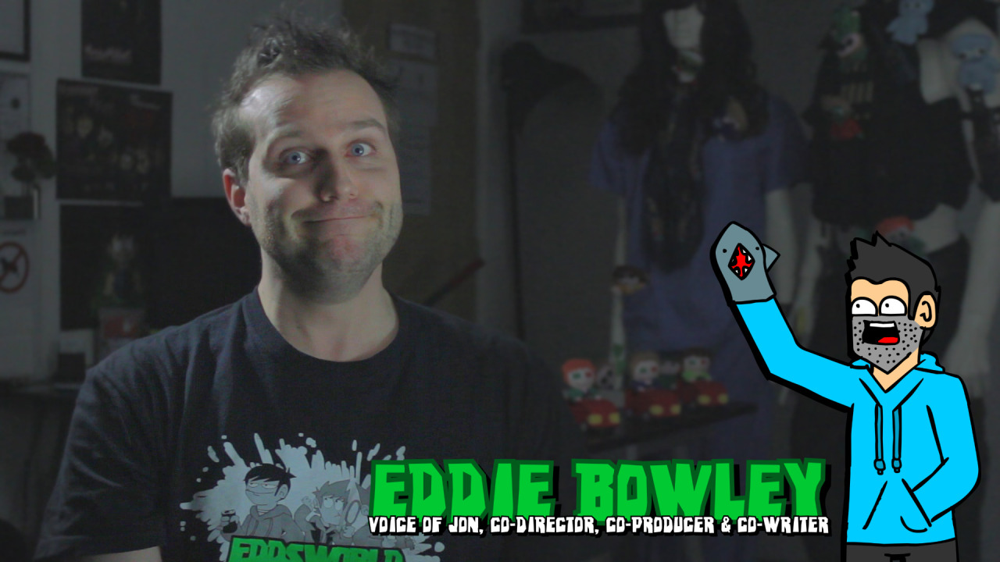
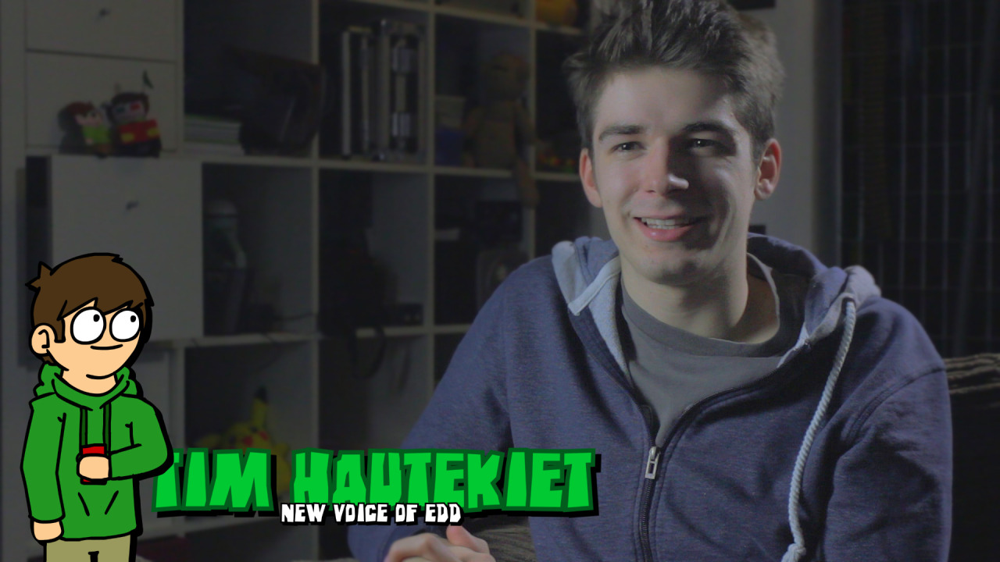

Hey Eddheads! So we’re gonna start rolling out the hype train for The End soon but first I wanted to let you know what’s happening with the documentary.
So one of the goals for the Eddsworld Legacy fundraiser was to fund a “mini behind the scenes documentary about making the show”. Well… Over time that turned from a 10 minute BTS into a 40 minute monster all about the history of the show and everything that went into making it. Since it’s so spoiler-heavy we’ve held off on releasing it but I can now safely announce that it’ll be available for Legacy donators in mid March of 2016 (it’ll be emailed to you via IndieGoGo) and everyone else in June of 2016!
I’ll be releasing the documentary publicly on my (Tom here) secondary channel, DarkSquidge. The reason I’m doing this is because once The End is released, I’ll be unlisting the two Legacy vlogs (x/x) on the Eddsworld channel so it’s just the animations left. No more need for them once their purpose has been served. I also feel like it wouldn’t be appropriate to potentially book-end Edd’s channel with a documentary about - essentially - ourselves. I hope that makes sense. And before you ask, no, I won’t be monetising the video as it’s on my channel. I do not make money off of Eddsworld.
So yeah! Just a little heads up. Expect some news about The End very soon!
- Tom